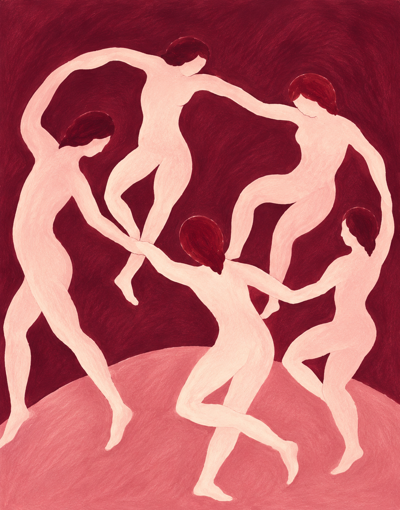
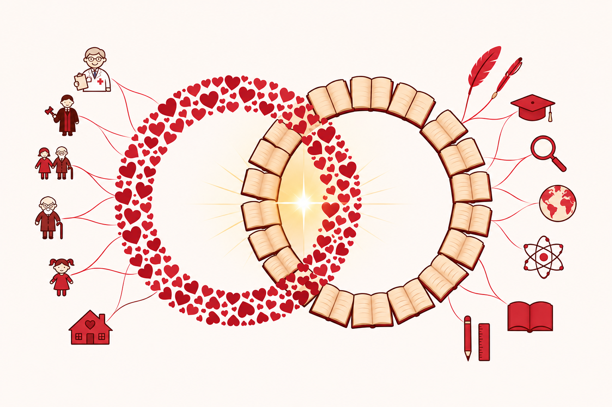

L’ASSOCIAZIONE
Da un progetto d'ascolto. Ad una comunità che agisce.
Coesione fa. è un’associazione socio culturale senza scopo di lucro dedicata alle relazioni, alla conoscenza ed al sostegno delle famiglie nei passaggi della vita.

L’ASSOCIAZIONE
Coesione.
Una parola che diventa azione.

Dal progetto Coesione a Coesione fa.
L’associazione prosegue il percorso del progetto Coesione, sviluppato da circa dieci anni dall’avvocato Maria Antonietta Schettino per accompagnare le famiglie nelle trasformazioni e nei momenti di difficoltà.
Il nome custodisce un duplice significato: «fa.» richiama il verbo fare — agire, operare — e la parola familiare. La coesione non è soltanto un’idea: è un impegno da costruire nelle relazioni e nella vita della comunità.
Centro polifunzionale per la famiglia
Un centro polifunzionale rivolto alla famiglia in crisi o a chi desidera semplicemente rafforzare il proprio nucleo: un luogo di accoglienza, sostegno e percorsi dedicati, pensati attraverso il confronto fra un’équipe medico-legale e un’équipe ludico-didattica, con uno sguardo di conoscenza trasversale.
La famiglia, principium urbis: è considerata come un insieme vivo di relazioni, accompagnato dal dialogo fra più specialisti. L’immagine dell’organismo che ritrova armonia attraverso contributi differenti è una visione del progetto.
La cura delle relazioni è intesa come base di un possibile equilibrio psicofisico e sociale: se non ci si prende cura della famiglia, non ci si prende cura nemmeno della società. Il lavoro si articola su tre livelli, con uno sguardo di conoscenza trasversale, di azione e prevenzione.
Accompagnamento nella crisi
Un primo livello offre un abbraccio e un sostegno alla famiglia o alla coppia che riconosce una situazione di crisi e sta valutando una separazione. È possibile richiedere un confronto con un avvocato o con un altro professionista, anche quale semplice anello di congiunzione con ulteriori competenze.
Dal confronto possono emergere, secondo necessità, il contributo dello psicologo, del mediatore familiare e dei medici specialisti, individuando la modalità più composita per orientarsi verso una separazione non distruttiva. In questo senso, il progetto propone alle famiglie un percorso di accompagnamento nella crisi.
Sostegno ai genitori e prevenzione
Un secondo livello mira a rassicurare i genitori, offrendo la possibilità di confrontarsi con specialisti anche per chiedere consiglio su come affrontare verbalmente in famiglia temi delicati. Solitudine e assenza di punti di riferimento possono far procedere le famiglie nell’incertezza e nella paura, alimentando dinamiche di maggiore crisi.
Rientra in questa prospettiva la conoscenza dei principi alla base della responsabilità genitoriale, richiamati in via generale dall’art. 316 c.c.
Incontri e conoscenza
Il terzo livello intende colmare i vuoti di conoscenza attraverso incontri tematici dedicati: occasioni di condivisione che possono favorire rassicurazione e coesione sociale.
Una dimensione psico-socioculturale. Mediazione, consulenza familiare, ascolto e orientamento si affiancano alla conoscenza, all’arte e al gioco. Gli incontri generano confronto e dibattiti; gli approfondimenti di storia, filosofia e letteratura aprono il progetto anche alle domande dei giovani e dei giovani adulti.
Il rapporto tra relazioni e benessere è un tema di attenzione e approfondimento, non una promessa di cura. L’accoglienza e l’orientamento non sostituiscono una valutazione sanitaria o professionale individuale.
La mancanza di conoscenza provoca pregiudizio, paura e distanza. Colmando il vuoto della conoscenza si ottiene un avvicinamento con conseguente abbassamento delle difese. Incontri tematici dedicati: occasioni di condivisione che possono favorire rassicurazione e coesione sociale.
Cura e confronto.
La finalità è accogliere, sostenere e accompagnare le famiglie nei momenti passaggi fisiologici della vita alla famiglia ed all’ indivduo in crisi, favorendo relazioni più consapevoli attraverso ascolto, confronto, mediazione, conoscenza e attività condivise.
Il valore delle relazioni
L'equilibrio e il benessere trovano fondamento nelle relazioni con l'altro.
L'equilibrio e il benessere che ogni essere umano ricerca trovano fondamento nelle relazioni con l'altro. Comprendere questo collegamento significa leggere la responsabilità genitoriale (art. 316 del Codice civile) con una griglia più ampia e un'intensa responsabilità.
Imparare a mediare, a comunicare, a prevenire il conflitto, saperlo gestire, evitare inutili ed egoistici scontri, diventa una questione di salute da regalare o meno ai figli. Si vuole diffondere la mediazione familiare, la consulenza familiare e gli strumenti ad essa connessi, a supporto delle famiglie nei classici e fisiologici passaggi della vita, senza paura e senza giudizio.
La conoscenza, il confronto e il gioco sono i mezzi utilizzati dall'associazione. Incontri informativi e formativi, consulenze con professionisti, corsi e laboratori creativi permettono di rassicurare, accogliere senza giudicare con condivisione e consapevolezza.
Contattaci
Ogni confronto inizia dall'ascolto.
Vuoi conoscere meglio Coesione fa., ricevere informazioni sui nostri percorsi? Scrivici attraverso il modulo.
Email
coesionefa@gmail.com